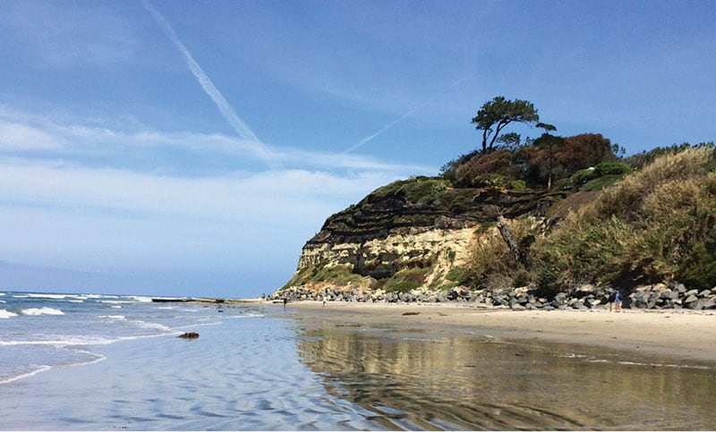
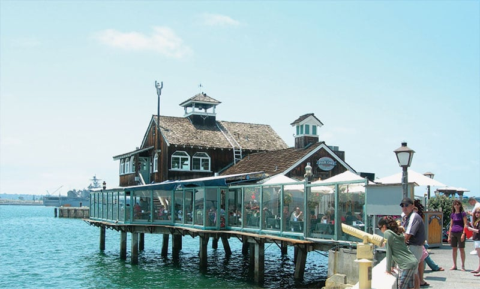

- Главная /
- Туразметки /
- Сан-Диего – прелесть побережья Тихого океана!
Сан-Диего – прелесть побережья Тихого океана!
Если вы решили попутешествовать по США, то не пропустите Сан-Диего. Это один из самых солнечных городов Калифорнии!
Между прочим, этот курорт – одно из самых популярных туристических направлений в США. В Сан-Диего отличная и полная инфраструктура для туристов – от сверкающих небоскребов и торговых центров до старинных мест, топовых пляжей и кафе. Население города – не самое малочисленное: город является вторым по численности в штате Калифорния и, к слову, восьмым в
Между прочим, этот курорт – одно из самых популярных туристических направлений в США. В Сан-Диего отличная и полная инфраструктура для туристов – от сверкающих небоскребов и торговых центров до старинных мест, топовых пляжей и кафе. Население города – не самое малочисленное: город является вторым по численности в штате Калифорния и, к слову, восьмым в

США!
Вы удивитесь, но жизнь в Сан-Диего настолько спокойная и размеренная, что местные жители не запирают даже двери. Между тем, суровые законы не позволяют портить или плохо ухаживать за зданиями. Поэтому все дома выглядят опрятно и достойно независимо от их места расположения.
Желающим подтянуть английский язык будет приятно оказаться почти в полностью англоговорящей среде. Например, в Майами – в основном распространен испанский.
Неспроста жители Сан-Диего нескромно говорят о нём как о самом красивом и солнечном месте в США. Начать знакомство с обворожительными красотами южных окрестностей можно лишь с моря.
Вы удивитесь, но жизнь в Сан-Диего настолько спокойная и размеренная, что местные жители не запирают даже двери. Между тем, суровые законы не позволяют портить или плохо ухаживать за зданиями. Поэтому все дома выглядят опрятно и достойно независимо от их места расположения.
Желающим подтянуть английский язык будет приятно оказаться почти в полностью англоговорящей среде. Например, в Майами – в основном распространен испанский.
Неспроста жители Сан-Диего нескромно говорят о нём как о самом красивом и солнечном месте в США. Начать знакомство с обворожительными красотами южных окрестностей можно лишь с моря.

Незабываемый круиз по заливу (начиная от Портовой улицы, заканчивая Бродвеем) вы запомните надолго. После воодушевляющего плавания сходите в одну из самых популярных достопримечательностей – Морской музей. Там вы увидите гигантский корабль XIX века с запутанными коридорами под палубой и трёхмачтовый барк с железной обшивкой «Звезда Индии». Почти как Чёрная Жемчужина из «Пиратов Карибского моря».
Оттуда направляйтесь к водному парку, к заливу Мишн-Бей. Здесь вы сможете поплавать на байдарке или под парусом на катамаране и яхте среди крошечных островов и лагун!
Оттуда направляйтесь к водному парку, к заливу Мишн-Бей. Здесь вы сможете поплавать на байдарке или под парусом на катамаране и яхте среди крошечных островов и лагун!

В Сан-Диего вы забудете обо всех своих переживаниях и проблемах на фоне яркого неба и тёплых лучей солнца!
Следует заметить, из-за развитой инфраструктуры и высококлассного сервиса, Сан-Диего считается довольно дорогим для туристов. В среднем, пара недель хорошего пляжного отдыха в отеле в Сан-Диего сопоставима по цене с отдыхом на Мальдивах.
Следует заметить, из-за развитой инфраструктуры и высококлассного сервиса, Сан-Диего считается довольно дорогим для туристов. В среднем, пара недель хорошего пляжного отдыха в отеле в Сан-Диего сопоставима по цене с отдыхом на Мальдивах.